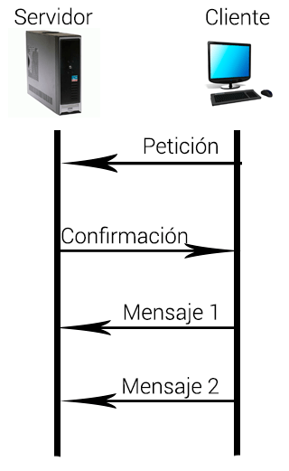

¿Qué son los sockets?
Los sockets son un mecanismo que nos permite establecer un enlace entre dos programas que se ejecutan independientes el uno del otro (generalmente un programa cliente y un programa servidor) Java por medio de la librería java.net nos provee dos clases: Socket para implementar la conexión desde el lado del cliente y ServerSocket que nos permitirá manipular la conexión desde el lado del servidor.

Comunicación cliente/servidor con Socket TCP:
-Crear un objeto de la clase Socket, indicando host y puerto donde corre el servicio.
- Obtener las referencias al stream de entrada y al de salida al socket.
-Leer desde y escribir en el stream de acuerdo al protocolo del servicio. Para ello emplear alguna de las facilidades del paquete java.io.
- Utilizar patrones relevantes en el diseño de la capa de presentación. Los patrones de diseño simplifican la implementación y mantenimiento de la capa de presentación y aportan la robustez de soluciones probadas y de éxito en la industria
- Cerrar los streams.
- Cerrar el socket.
La forma de implementar un servidor será:
-Crear un objeto de la clase ServerSocket para escuchar peticiones en el puerto asignado al servicio
- Esperar solicitudes de clientes
-Aceptar la conexión obteniendo un objeto de la clase Socket Obtener las referencias al stream de entrada y al de salida al socket anterior. Leer datos del socket, procesarlos y enviar respuestas al cliente, escribiendo en el stream del socket.Para ello emplear alguna de las facilidades del paquete java.io.
- Utilizar patrones relevantes en el diseño de la capa de presentación. Los patrones de diseño simplifican la implementación y mantenimiento de la capa de presentación y aportan la robustez de soluciones probadas y de éxito en la industria
- Cerrar los streams.
- Cerrar el socket.